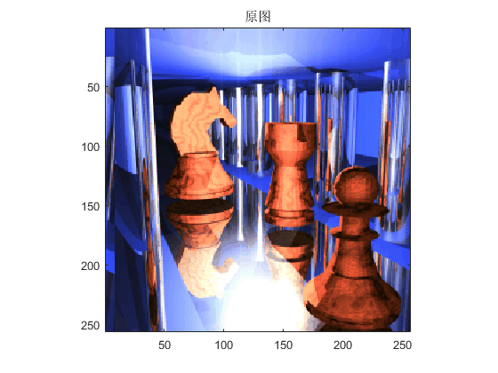
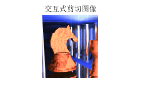
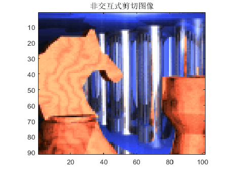

Contents
function test53
3.将索引图像'chess.mat'进行剪切
(1) 交互式剪切； (2) 非交互式剪切；
初始化
clc; % 清除命令窗口 clf; % 清除图形窗口 clear % 清除工作区 % 加载图像 load chess.mat subimage(X,map); title('原图');
(1) 交互式剪切
imcrop
title('交互式剪切图像');
 (2) 非交互式剪切
figureEx(3,'非交互式剪切图像',[0.53,0.1,0.45,0.45]) X1=imcrop(X,map,[60 40 100 90]); subimage(X1,map);title('非交互式剪切图像');